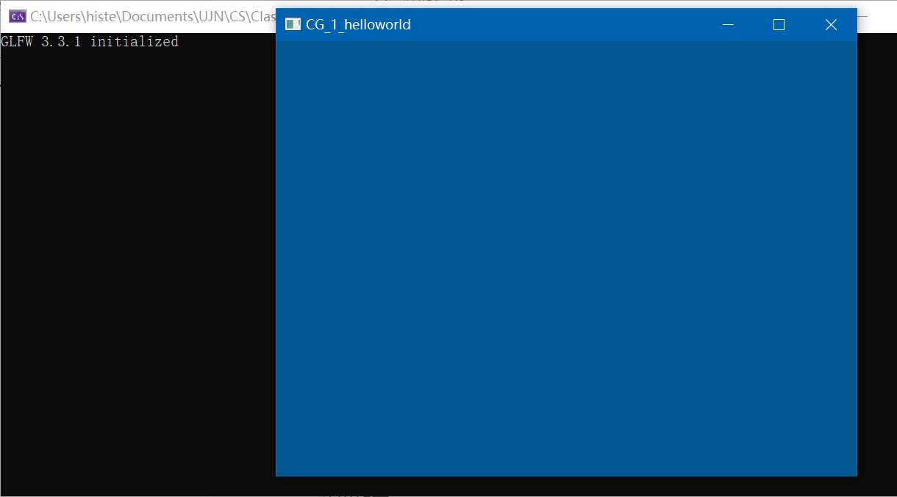

在这里我们将实现一个空窗口的渲染
渲染一个黑色空窗体
初始化
GLFW
让我们先来试试能不能让 GLFW正常工作。首先，新建一个.cpp文件，然后把下面的代码粘贴到该文件的最前面
1 |
接下来我们创建 main 函数，在这个函数中我们将会实例化 GLFW窗口：
1 | int main() |
首先，我们在 main函数中调用 glfwInit函数来初始化 GLFW，然后我们可以使用 glfwWindowHint函数来配置 GLFW。glfwWindowHint函数的第一个参数代表选项的名称，我们可以从很多以 GLFW_开头的枚举值中选择；第二个参数接受一个整形，用来设置这个选项的值。如果你现在编译你的 cpp文件会得到大量的 undefined reference (未定义的引用)错误，也就是说你并未顺利地链接GLFW库。
由于我们是基于 OpenGL3.3来进行讨论的 ，我们将主版本号(Major)和次版本号(Minor)都设为 3。我们同样明确告诉 GLFW我们使用的是核心模式(Core-profile)。明确告诉 GLFW我们需要使用核心模式意味着我们只能使用
OpenGL功能的一个子集（没有我们已不再需要的向后兼容特性）。如果使用的是 Mac OS X系统，你还需要加下面这行代码到你的初始化代码中这些配置才能起作用（将上面的代码解除注释）：
1 | glfwWindowHint(GLFW_OPENGL_FORWARD_COMPAT, GL_TRUE); |
当然我们也可以看到 GLFW当前使用的版本号
1 | int Major, Minor, Rev; |
窗体
接下来我们创建一个窗口对象，这个窗口对象存放了所有和窗口相关的数据，而且会被 GLFW的其他函数频繁地用到。
1 | GLFWwindow* window = glfwCreateWindow(800, 600, "window", NULL, NULL); |
glfwCreateWindow函数需要窗口的宽和高作为它的前两个参数。第三个参数表示这个窗口的名称（标题），这里我们使用”window”，当然你也可以使用你喜欢的名称。最后两个参数我们暂时忽略。这个函数将会返回一个
GLFWwindow对象，我们会在其它的 GLFW操作中使用到。创建完窗口我们就可以通知 GLFW将我们窗口的上下文设置为当前线程的主上下文了。
GLAD
在之前我们已经提到，GLAD是用来管理 OpenGL的函数指针的，所以在调用任何 OpenGL的函数之前我们需要初始化 GLAD。
1 | if (!gladLoadGLLoader((GLADloadproc)glfwGetProcAddress)) |
我们给 GLAD传入了用来加载系统相关的 OpenGL函数指针地址的函数。GLFW给我们的是glfwGetProcAddress，它根据我们编译的系统定义了正确的函数。
视口
在我们开始渲染之前还有一件重要的事情要做，我们必须告诉 OpenGL渲染窗口的尺寸大小，即视口(Viewport)，这样 OpenGL才只能知道怎样根据窗口大小显示数据和坐标。我们可以通过调用 glViewport函数来设置窗口的维度(Dimension)：
1 | glViewport(0, 0, 800, 600); |
glViewport函数前两个参数控制窗口左下角的位置。第三个和第四个参数控制渲染窗口的宽度和高度（像素）。我们实际上也可以将视口的维度设置为比 GLFW的维度小，这样子之后所有的 OpenGL渲染将会在一个更小的窗口中显示，这样子的话我们也可以将一些其它元素显示在 OpenGL视口之外。
然而，当用户改变窗口的大小的时候，视口也应该被调整。我们可以对窗口注册一个回调函数(Callback Function)，它会在每次窗口大小被调整的时候被调用。这个回调函数的原型如下：
1 | void framebuffer_size_callback(GLFWwindow* window, int width, int |
这个帧缓冲大小函数需要一个 GLFWwindow 作为它的第一个参数，以及两个整数表示窗口的新维度。每当窗口改变大小，GLFW会调用这个函数并填充相应的参数供你处理。
我们还需要注册以下这个函数，告诉 GLFW我们希望每当窗口改变大小的时候调用上面的回调函数完成视口调整处理：
1 | glfwSetFramebufferSizeCallback(window, framebuffer_size_callback); |
当窗口被第一次显示的时候 framebuffer_size_callback也会被调用。对于视网膜(Retina)显示屏，width和 height都会明显比原输入值更高一点。
渲染
我们希望程序在我们主动关闭它之前不断绘制图像并能够接受用户输入
因此，我们需要继续在程序中添加一个while循环，我们可以把它称之为渲染循环(Render Loop)，它能在我们让 GLFW退出前一直保持运行。下面几行的代码就实现了一个简单的渲染循环：
1 | while(!glfwWindowShouldClose(window)) |
glfwWindowShouldClose 函数在我们每次循环的开始前检查一次 GLFW 是否被要求退出，如果是的话该函数返回 true然后渲染循环便结束了，之后为我们就可以关闭应用程序了。glfwPollEvents 函数检查有没有触发什么事件（比如键盘输入、鼠标移动等）、更新窗口状态，并调用对应的回调函数（可以通过回调方法手动设置）。
glfwSwapBuffers 函数会交换颜色缓冲（它是一个储存着 GLFW 窗口每一个像素颜色值的大缓冲），它在这一迭代中被用来绘制，并且将会作为输出显示在屏幕上。
双缓冲(Double Buffer)
应用程序使用单缓冲绘图时可能会存在图像闪烁的问题。 这是因为生成的图像不是一下子被绘制出来的，而是按照从左到右，由上而下逐像素地绘制而成的。最终图像不是在瞬间显示给用户，而是通过一步一步生成的，这会导致渲染的结果很不真实。为了规避这些问题，我们应用双缓冲渲染窗口应用程序。前缓冲保存着最终输出的图像，它会在屏幕上显示；而所有的的渲染指令都会在后缓冲上绘制。当所有的渲染指令执行完毕后，我们交换(Swap)前缓冲和后缓冲，这样图像就立即呈显出来，之前提到的不真实感就消除了。
当渲染循环结束后我们需要正确释放/删除之前的分配的所有资源。我们可以在 main函数的最后调用 glfwTerminate 函数来完成。
1 | glfwTerminate(); |
这样便能清理所有的资源并正确地退出应用程序。现在你可以尝试编译并
运行你的应用程序了。
如果没做错的话，你将会看到一个黑色窗口。恭喜你，那就对了。
如果没有得到正确的结果，或者不知道怎样把东西放在一起，那么请参考源码：
https://github.com/histevehu/OpenGL-Learning
我们会将所有的示例源码提交至此
更进一步：更换颜色！
接下来，我们只需要增添一些细节，就可以改变窗体的颜色
我们要把所有的渲染操作放到渲染循环中，因为我们想让这些渲染指令在每次渲染循环迭代的时候都能被执行。代码将会是这样的：
1 | while(!glfwWindowShouldClose(window)) |
为了测试一切都正常工作，我们使用一个自定义的颜色清空屏幕。在每个新的渲染迭代开始的时候我们总是希望清屏，否则我们仍能看见上一次迭代的渲染结果（这可能是你想要的效果，但通常这不是）。我们可以通过调用glClear函数来清空屏幕的颜色缓冲，它接受一个缓冲位(Buffer Bit)来指定要清空的缓冲，可能的缓冲位有GL_COLOR_BUFFER_BIT，GL_DEPTH_BUFFER_BIT和 GL_STENCIL_BUFFER_BIT。由于现在我们只关心颜色值，所以我们只清空颜色缓冲。
1 | glClearColor(0.0f, 0.34f, 0.57f, 1.0f); |
注意，除了 glClear之外，我们还调用了 glClearColor来设置清空屏幕所用的颜色。当调用 glClear函数，清除颜色缓冲之后，整个颜色缓冲都会被填充为glClearColor里所设置的颜色。在这里，我们将屏幕设置为了一种好看的蓝色。
效果如下：

预告
如果一切顺利，那么这一节大功告成！
在下面一节中，我们将渲染三角形